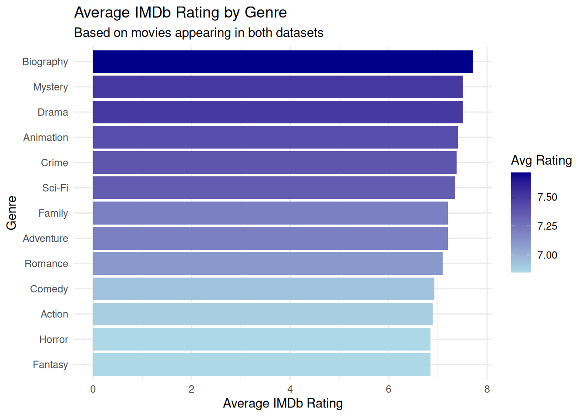
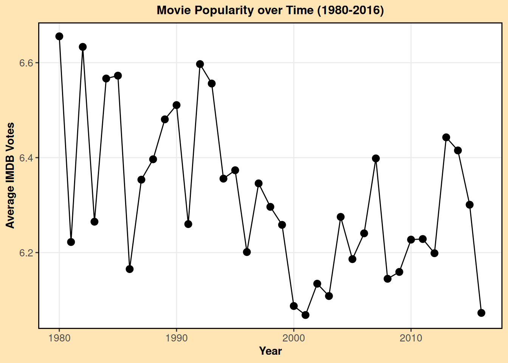
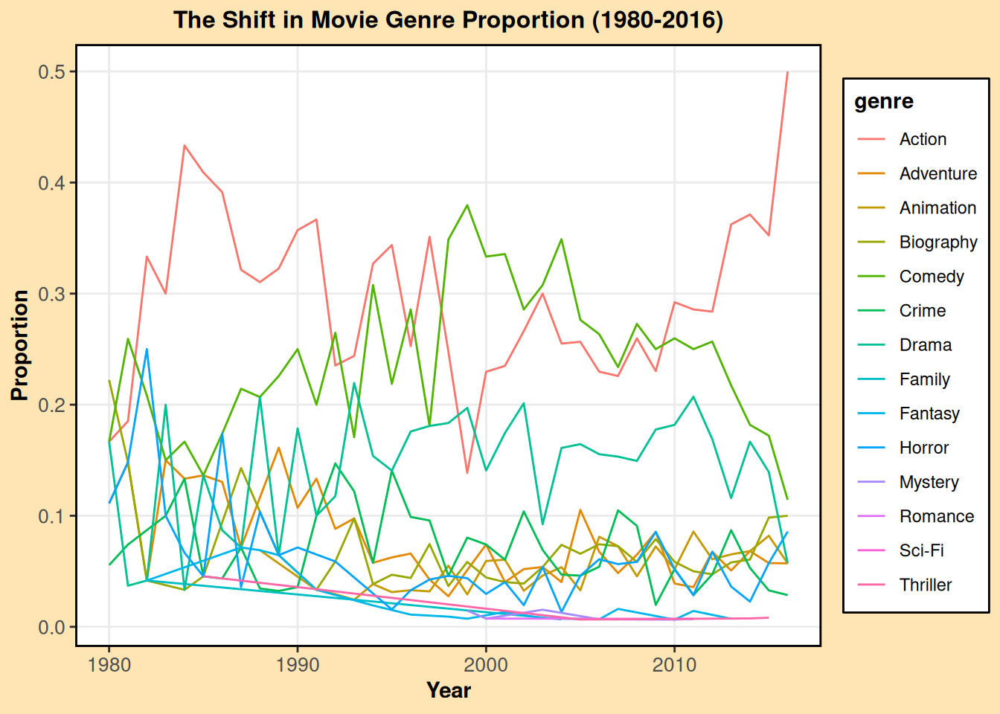

# movies.csv
movies <- readr::read_csv("movies.csv")
# movies_ratings.csv
ratings <- readr::read_csv("movie_ratings.csv")
# tmdb_5000_movies.csv
tmdb <- readr::read_csv("tmdb_5000_movies.csv")SQL Project
In this project, I collaborate with Zoe Doherty to create visualizations on movie data with the use of DuckDB and SQL Queries. Quite interesting relationships can be found between year released, movie rating, movie genre, and IMDB score.
—————————————————————————
Accessing data
Data accessing done by Zoe
—————————————————————————
Designing the database
Database design done together by Zoe and Owen
# Create the empty database
con <- DBI::dbConnect(duckdb::duckdb(), dbdir = "movie_db")
# Movies table
dbExecute(con, "
DROP TABLE IF EXISTS movies;
")
dbExecute(con, "
CREATE TABLE movies AS
SELECT *
FROM read_csv_auto(
'movies.csv',
HEADER = TRUE,
STRICT_MODE = FALSE
);
")
# Ratings table
dbExecute(con, "
DROP TABLE IF EXISTS movie_ratings;
")
dbExecute(con, "
CREATE TABLE movie_ratings (
X INTEGER,
movie VARCHAR,
year INTEGER,
imdb DOUBLE,
metascore DOUBLE,
votes INTEGER
);
")
dbExecute(con, "
COPY movie_ratings
FROM 'movie_ratings.csv'
(FORMAT CSV, HEADER);
")
# TMDB table
dbExecute(con, "
DROP TABLE IF EXISTS tmdb;
")
dbExecute(con, "
CREATE TABLE tmdb (
budget BIGINT,
genres VARCHAR,
homepage VARCHAR,
id INTEGER,
keywords VARCHAR,
original_language VARCHAR,
original_title VARCHAR,
overview VARCHAR,
popularity DOUBLE,
production_companies VARCHAR,
production_countries VARCHAR,
release_date DATE,
revenue BIGINT,
runtime DOUBLE,
spoken_languages VARCHAR,
status VARCHAR,
tagline VARCHAR,
title VARCHAR,
vote_average DOUBLE,
vote_count INTEGER
);
")
dbExecute(con, "
COPY tmdb
FROM 'tmdb_5000_movies.csv'
(FORMAT CSV, HEADER);
")
# Cleaning each table
dbExecute(con, "
CREATE OR REPLACE TABLE movies_new AS
SELECT
name AS title,
rating,
genre,
year,
released,
score,
votes,
director,
writer,
star,
country,
budget,
gross,
company,
runtime
FROM movies;
")
dbExecute(con, "DROP TABLE movies;")
dbExecute(con, "ALTER TABLE movies_new RENAME TO movies;")
dbExecute(con, "
CREATE OR REPLACE TABLE movie_ratings_new AS
SELECT
movie AS title,
year,
imdb,
metascore,
votes
FROM movie_ratings;
")
dbExecute(con, "DROP TABLE movie_ratings;")
dbExecute(con, "ALTER TABLE movie_ratings_new RENAME TO movie_ratings;")
dbExecute(con, "
CREATE OR REPLACE TABLE tmdb_new AS
SELECT
title,
YEAR(release_date) AS year,
budget,
revenue,
popularity,
vote_average,
vote_count,
original_language,
release_date,
runtime,
status
FROM tmdb;
")
dbExecute(con, "DROP TABLE tmdb;")
dbExecute(con, "ALTER TABLE tmdb_new RENAME TO tmdb;")
# Check to see the tables were loaded
dbListTables(con)—————————————————————————
Querying data using SQL
Done by Zoe
Query 1 - Top 10 Most Profitable movies
Over All Goal - Which movies and genres are the most successful
SELECT title,
year,
budget,
revenue,
revenue - budget AS profit
FROM tmdb
WHERE revenue > 0 AND budget > 0
ORDER BY profit DESC
LIMIT 10| title | year | budget | revenue | profit |
|---|---|---|---|---|
| Avatar | 2009 | 2.37e+08 | 2787965087 | 2550965087 |
| Titanic | 1997 | 2.00e+08 | 1845034188 | 1645034188 |
| Jurassic World | 2015 | 1.50e+08 | 1513528810 | 1363528810 |
| Furious 7 | 2015 | 1.90e+08 | 1506249360 | 1316249360 |
| The Avengers | 2012 | 2.20e+08 | 1519557910 | 1299557910 |
| Avengers: Age of Ultron | 2015 | 2.80e+08 | 1405403694 | 1125403694 |
| Frozen | 2013 | 1.50e+08 | 1274219009 | 1124219009 |
| Minions | 2015 | 7.40e+07 | 1156730962 | 1082730962 |
| The Lord of the Rings: The Return of the King | 2003 | 9.40e+07 | 1118888979 | 1024888979 |
| Iron Man 3 | 2013 | 2.00e+08 | 1215439994 | 1015439994 |
Query 2 - Average IMDb Rating and Metascore by Genre
Done by Zoe
SELECT m.genre,
ROUND(AVG(r.imdb), 2) AS avg_imdb,
ROUND(AVG(r.metascore), 2) AS avg_metascore,
COUNT(*) AS movie_count
FROM movie_ratings r
JOIN movies m ON r.title = m.title
AND r.year = m.year
GROUP BY m.genre
ORDER BY avg_imdb DESC| genre | avg_imdb | avg_metascore | movie_count |
|---|---|---|---|
| Biography | 7.71 | 76.78 | 96 |
| Drama | 7.50 | 78.09 | 186 |
| Mystery | 7.50 | 69.75 | 10 |
| Animation | 7.41 | 76.44 | 104 |
| Crime | 7.38 | 73.67 | 92 |
| Sci-Fi | 7.35 | 64.00 | 4 |
| Adventure | 7.20 | 72.65 | 108 |
| Family | 7.20 | 65.00 | 2 |
| Romance | 7.10 | NA | 2 |
| Comedy | 6.93 | 73.45 | 260 |
Query 3 - Average Popularity and Revenue by Decade
Done by Zoe
SELECT (year / 10) * 10 AS decade,
ROUND(AVG(popularity), 2) AS avg_popularity,
ROUND(AVG(revenue), 2) AS avg_revenue,
COUNT(*) AS movie_count
FROM tmdb
WHERE year IS NOT NULL
AND revenue > 0
GROUP BY decade
ORDER BY decade| decade | avg_popularity | avg_revenue | movie_count |
|---|---|---|---|
| 1916 | 3.23 | 8394751 | 1 |
| 1925 | 0.79 | 22000000 | 1 |
| 1927 | 32.35 | 650422 | 1 |
| 1929 | 0.97 | 4358000 | 1 |
| 1930 | 8.48 | 8000000 | 1 |
| 1932 | 1.20 | 25 | 1 |
| 1933 | 1.28 | 2240500 | 2 |
| 1934 | 11.87 | 4500000 | 1 |
| 1935 | 3.90 | 3202000 | 1 |
| 1936 | 15.62 | 5618000 | 2 |
Query 4 - Full 3 Table JOIN
Done by Zoe
SELECT m.title,
m.genre,
m.director,
r.imdb,
r.metascore,
t.budget,
t.revenue,
t.popularity
FROM movies m
JOIN movie_ratings r ON r.title = m.title
AND r.year = m.year
JOIN tmdb t ON t.title = m.title
AND t.year = m.year
WHERE t.budget > 0 AND t.revenue > 0
ORDER BY t.popularity DESC
LIMIT 20 | title | genre | director | imdb | metascore | budget | revenue | popularity |
|---|---|---|---|---|---|---|---|
| Minions | Animation | Kyle Balda | 6.4 | NA | 7.40e+07 | 1156730962 | 875.5813 |
| Minions | Animation | Kyle Balda | 6.4 | NA | 7.40e+07 | 1156730962 | 875.5813 |
| Interstellar | Adventure | Christopher Nolan | 8.6 | 74 | 1.65e+08 | 675120017 | 724.2478 |
| Interstellar | Adventure | Christopher Nolan | 8.6 | 74 | 1.65e+08 | 675120017 | 724.2478 |
| Deadpool | Action | Tim Miller | 8.0 | 65 | 5.80e+07 | 783112979 | 514.5700 |
| Deadpool | Action | Tim Miller | 8.0 | 65 | 5.80e+07 | 783112979 | 514.5700 |
| Guardians of the Galaxy | Action | James Gunn | 8.1 | 76 | 1.70e+08 | 773328629 | 481.0986 |
| Guardians of the Galaxy | Action | James Gunn | 8.1 | 76 | 1.70e+08 | 773328629 | 481.0986 |
| Mad Max: Fury Road | Action | George Miller | 8.1 | 90 | 1.50e+08 | 378858340 | 434.2786 |
| Mad Max: Fury Road | Action | George Miller | 8.1 | 90 | 1.50e+08 | 378858340 | 434.2786 |
-- Owen's work: How do movie ratings, genre, and number of votes develop over
-- the years?
-- First, let's join the tables containing the information we want:
CREATE OR REPLACE TABLE table1 AS
SELECT
t.year,
FLOOR(t.year / 10) * 10 AS decade,
t.title,
m.rating,
m.genre,
t.vote_average
FROM tmdb t
JOIN movies m
ON t.title = m.title
WHERE m.rating IN ('R', 'PG', 'PG-13', 'G')
ORDER BY t.year;
-- Cutting down the ratings to just those four categories to simplify the
-- data visualization, and arranging by year
-- Now let's see what we can find. How many of each rating are there for each
-- year, and what are the average votes for each?
CREATE OR REPLACE TABLE table2 AS
WITH base AS (
SELECT
year,
rating,
COUNT(*) AS count,
AVG(vote_average) AS avg_votes
FROM table1
GROUP BY year, rating
),
years AS (
SELECT DISTINCT year FROM table1
),
ratings AS (
SELECT DISTINCT rating FROM table1
),
all_combos AS (
SELECT y.year, r.rating
FROM years y
CROSS JOIN ratings r
)
SELECT
a.year,
a.rating,
COALESCE(b.count, 0) AS count,
COALESCE(b.count, 0) * 1.0
/ SUM(COALESCE(b.count, 0)) OVER (PARTITION BY a.year) AS proportion,
b.avg_votes
FROM all_combos a
LEFT JOIN base b
ON a.year = b.year AND a.rating = b.rating
WHERE count != 0
ORDER BY a.year;
-- Used assistance from ChatGPT to figure out how to cross join the years to the
-- ratings, which in turn helped me create the proportion column
-- Let's do a similar query involving the movie genre.
CREATE OR REPLACE TABLE table3 AS
WITH base AS (
SELECT
year,
genre,
COUNT(*) AS count,
AVG(vote_average) AS avg_votes
FROM table1
GROUP BY year, genre
),
years AS (
SELECT DISTINCT year FROM table1
),
genres AS (
SELECT DISTINCT genre FROM table1
),
all_combos AS (
SELECT y.year, g.genre
FROM years y
CROSS JOIN genres g
)
SELECT
a.year,
a.genre,
COALESCE(b.count, 0) AS count,
COALESCE(b.count, 0) * 1.0
/ SUM(COALESCE(b.count, 0)) OVER (PARTITION BY a.year) AS proportion,
b.avg_votes
FROM all_combos a
LEFT JOIN base b
ON a.year = b.year AND a.genre = b.genre
WHERE count != 0
ORDER BY a.year;
-- Now let's group all of the important information that we want for our final
-- data viz
CREATE OR REPLACE TABLE table4 AS
SELECT table2.year, table2.rating, table2.proportion AS rating_prop, table3.genre, table3.proportion AS genre_prop, AVG(table2.avg_votes) AS avg_votes
FROM table2
JOIN table3 on table2.year = table3.year
GROUP BY table2.year, table2.rating, rating_prop, table3.genre, genre_prop;—————————————————————————
Done by Zoe
Creating data visualizations
Pulling data for visualization
genre_ratings <-dbGetQuery(con, "
SELECT m.genre,
ROUND(AVG(r.imdb), 2) AS avg_imdb,
COUNT(*) AS movie_count
FROM movie_ratings r
JOIN movies m ON r.title = m.title
AND r.year = m.year
GROUP BY m.genre
ORDER BY avg_imdb DESC
")Done by Zoe
Plot - Data visualization
Shows which genres consistently receive the highest IMDb ratings. The color gradient makes it easy to see at first glance which genres perform the best. This is fed directly by the JOIN query from Query 2.
ggplot(genre_ratings, aes(x = reorder(genre, avg_imdb), y = avg_imdb, fill = avg_imdb)) +
geom_col() +
coord_flip() +
scale_fill_gradient(low = "lightblue", high = "darkblue") +
labs(
title = "Average IMDb Rating by Genre",
subtitle = "Based on movies appearing in both datasets",
x = "Genre",
y = "Average IMDb Rating",
fill = "Avg Rating"
) +
theme_minimal()
# Owen's data viz - So let's wrap up this information. How have movies been
# adapting over the years (1980 to 2016), and how have the popularity votes
# responded to those changes?
library(ggplot2)
table1 <- DBI::dbGetQuery(con, "SELECT * FROM table1")
table4 <- DBI::dbGetQuery(con, "SELECT * FROM table4")
# I will filter out the few movies before 1980 to make trends in more recent
# data clearer
revised_table1 <- table1 |>
filter(year >= 1980)
revised_table4 <- table4 |>
filter(year >= 1980)
# I will also make sure table1 features the average votes by year so I can
# create a plot with it as our baseline findings
avg_votes_by_year <- revised_table1 |>
group_by(year) |>
summarise(avg_votes = mean(vote_average, na.rm = TRUE))
# Data Viz 1: Line plot of movie popularity over time
ggplot(avg_votes_by_year, aes(x = year, y = avg_votes)) +
geom_point(size = 3) +
geom_line() +
labs(x = "Year", y = "Average IMDB Votes", title = "Movie Popularity over Time (1980-2016)") +
theme_bw() +
# Visual theming elements
theme(
plot.title = element_text(hjust = 0.5, face = "bold", size = 12),
plot.subtitle = element_text(hjust = 0.5, size = 12),
axis.title = element_text(face = "bold"),
axis.text = element_text(size = 10),
legend.title = element_text(face = "bold"),
legend.background = element_rect(fill = "white", color = "black"),
panel.border = element_rect(color = "black", fill = NA, linewidth = 1),
panel.grid.minor = element_blank()
) +
# Final touches
theme(plot.background = element_rect(fill = "#FFE5B4", color = NA))
# Data Viz 2: Bar plot of movie rating frequencies over time
ggplot(revised_table1, aes(x = year, fill = rating)) +
geom_bar() +
labs(x = "Year", y = "Count", fill = "Rating", title = "The Surge of Movie Rating Frequencies (1980-2016)") +
theme_bw() +
theme(
plot.title = element_text(hjust = 0.5, face = "bold", size = 12),
plot.subtitle = element_text(hjust = 0.5, size = 12),
axis.title = element_text(face = "bold"),
axis.text = element_text(size = 10),
legend.title = element_text(face = "bold"),
legend.background = element_rect(fill = "white", color = "black"),
panel.border = element_rect(color = "black", fill = NA, linewidth = 1),
panel.grid.minor = element_blank()
) +
theme(plot.background = element_rect(fill = "#FFE5B4", color = NA))
# Data Viz 3: Line plot of movie genre proportions over time
ggplot(revised_table4, aes(x = year, y = genre_prop, color = genre)) +
geom_line() +
labs(x = "Year", y = "Proportion", fill = "Genre", title = "The Shift in Movie Genre Proportion (1980-2016)") +
theme_bw() +
theme(
plot.title = element_text(hjust = 0.5, face = "bold", size = 12),
plot.subtitle = element_text(hjust = 0.5, size = 12),
axis.title = element_text(face = "bold"),
axis.text = element_text(size = 10),
legend.title = element_text(face = "bold"),
legend.background = element_rect(fill = "white", color = "black"),
panel.border = element_rect(color = "black", fill = NA, linewidth = 1),
panel.grid.minor = element_blank()
) +
theme(plot.background = element_rect(fill = "#FFE5B4", color = NA))Ignoring unknown labels:
• fill : "Genre"
# Needed the assistance of ChatGPT to help come up with theme and other
# detailing ideas
# As it turns out, the average votes line graph, although spontaneous in
# nature, reflects a slight downward trend over time. One potential
# explainer of this is the fact that the overall number of movies per year
# surged around 1995, which is about when ratings began to decrease and level
# off. Perhaps people became less enthused about the concept of movies in
# general when too many started being made.
# However, we now look at the proportion line graphs for genre, of which show
# rapid spontaneity. Still, the main genres throughout this time period seem
# to be Action, Comedy, and Family, with Comedy and Family being the more
# recent frontrunners. This could explain the sudden increase of PG and PG-13
# rated movies as seen in the barplot. So, since the IMDB_voters are all adults,
# it is possible they are simply less enthused about movies tailored for
# younger audiences.
# Either way, it is evident that the direction the movie industry is taking is
# not completely dependent on this popularity metric I used, avg_votes. Movies
# are being churned out relentlessly, and more and more are PG, PG-13, and G
# rated movies. So, it seems like we have come across an era where movies are
# no longer just for the adults, hardcore horror fans, or IMDB critics, but
# for the average young family as well.—————————————————————————
Sources
https://www.kaggle.com/datasets/danielgrijalvas/movies
https://www.kaggle.com/datasets/raidevesh05/movie-ratings-dataset
https://www.kaggle.com/datasets/tmdb/tmdb-movie-metadata